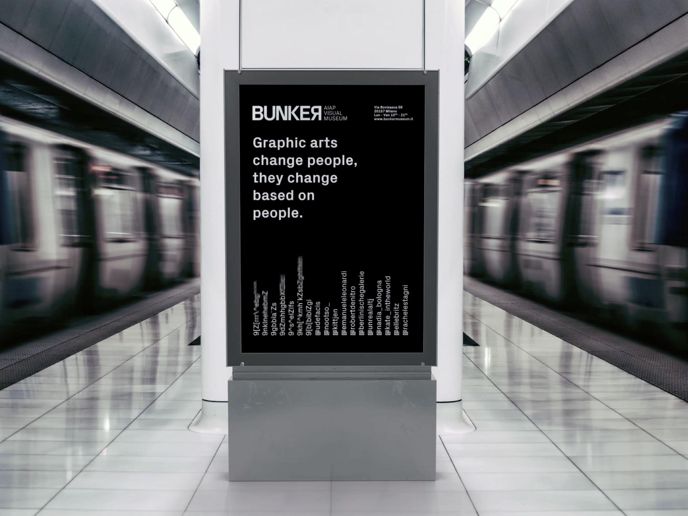

BUNKER
Project
The project consisted of creating a museum’s visual identity. A black and white, disruptive and elegant brand that could allure young people into historical graphic artifacts from Italian masters of graphic design. This work included logo designing, brand values creation, tone of voice and target definition, communication strategies, editorial schedule for social media, launch campaign creation, market differentiation, digital and traditional campaign planning.
Role
Team
Logo design, font research, group coordination, copy writing, tone of voice, video art direction, website visual supervision, presentation design.
Team
by Jacopo William de Denaro, Lorenzo Gallo, Emanuele Leonardi, NIcolò Lorenzotti, Edwin Mata and Andrea Silvano

